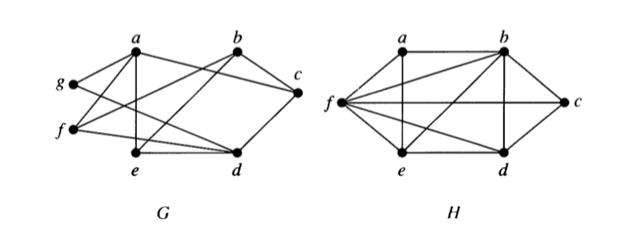

6 Bipartite Graphs
6.1 Definition
A simple graph \(G\) is biparatite if its vertices can be partitioned into two disjoint subsets \(V_1\) and \(V_2\) and every edge connects a vertex in \(V_1\) with a vertex in \(V_2\). The pair \(\langle V_1, V_2 \rangle\) is called a bipartition of \(G\).
6.2 Examples
- Which of the following are bipartite?

For what values of \(n\) are the following bipartite?
- \(K_n\)
- \(C_n\)
- \(Q_n\)
Can a bipartite graph have more than one bipartition? If so, give an example. If not, explain why not.
Describe an algorithm for checking whether a graph is bipartite. How efficient is your algorithm?
6.3 Complete Bipartite Graphs
A complete biparite graph \(K_{m,n}\) has two disjoint sets of vertices \(V_1\) and \(V_2\) with \(m\) and \(n\) elements. There is an edge between \(x\) and \(y\) if and only if \(x \in V_1\) and \(y \in V_2\) or \(x \in V_2\) and \(y \in V_1\).
Here are some examples.

- Draw the following graphs: \(K_{2,2}\), \(K_{4,2}\), \(K_{4,3}\)